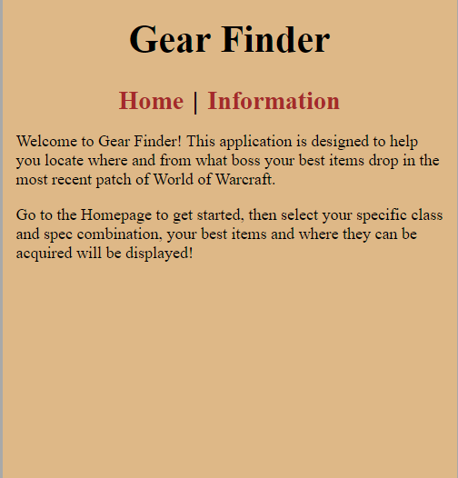
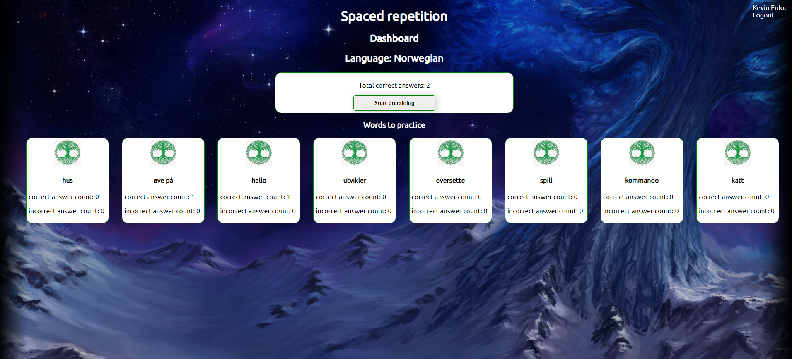

Hello! I'm Kevin Enloe.
I'm a software developer living in Fort-Collins, Colorado.
As a former Assistant Store Manager I appreciate:
- The value of team work, working well with others is key to success in most areas of life.
- Efficient code, just like in business: wasted steps slow everything down.
- I have a competitive drive, whether it's racing dirt bikes, running a business, or anything I pursue, I strive for excellence.

About Me
After high school I joined the work force, shortly thereafter I found a company that needed assistance with data transfer from an old inventory system to a new one, I've always been drawn to computer work so I gave it a shot. Turns out it was something I loved doing, and once the data transfer was completed I created a training manual for the company and stayed on running their inventory system until eventually they closed the location I was working out of.
I then went to work for Walmart, and that is where I worked up until earlier this year when my position was eliminated due to COVID related changes. I started as a stocker and quickly rose to department manager. After doing that for about a year I was given an opportunity to go to the Walmart Academy(where they train all new managers for our region) as a trainer. Again after about a year I promoted to Assistant Store Manager moving over to the Sam's Club side of things. I did that for about a year and a half before the COVID changes occurred earlier this year, and being the least tenured it left me on the outs.
All of this has given me an opportunity to choose a new path in life, one that I feel very excited to pursue with Thinkful.
I will be able to help you design professional web pages and web apps using a variety of different coding languages and methods(will include more specifics as I update portfolio throughout the course).
If you're looking to hire a new developer with plenty of business experience I would love to hear from you!
Portfolio
Gear Finder
The purpose of this project is to help the user find the optimal gear for their World of Warcraft character during the launch window of their most recent release. This was my first major project where I wrote a both a front end and a back end utilizing React and Node.js/Express. I learned a great deal about writing sql queries and migrations during this project.
Med Tracker

This app was designed for people to keep track of their medications in one easy to view place. It utilizes a client side and a server/api that were both written by me. The client side was written using React(with React Hooks), the API portion was written using Node.js with Express/Knex(Postgres). I learned alot during this project about working with user authentication in conjunction with api calls.
Spaced Repetition
The function of this project is to help the user learn words in Norwegian through spaced repetition. This project was built using React for the Front end, and node.js/express on the back end. This was one of the first projects that I got to personally add a login function to my apps, so I learned alot on that front in creating this app.
Petful

The function of this app is to be able to join a queue to adopt a pet, and then when it becomes the users turn, pick a pet and get confirmation. This project was built using React for the Front end, and node.js/express on the back end. This project utilizes linked lists, and was a great way for me to get some hands on experience in coding with them over the more commonly utilitzed objects/arrays.